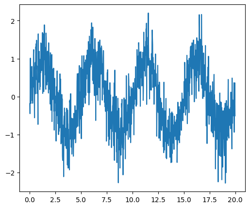
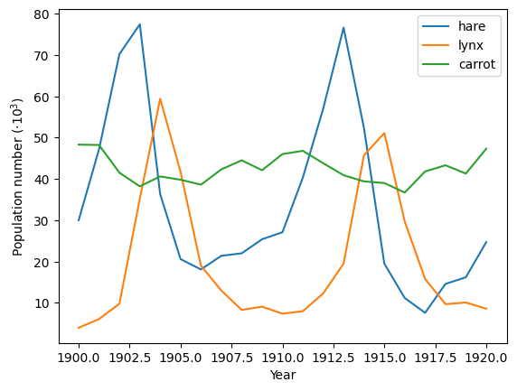
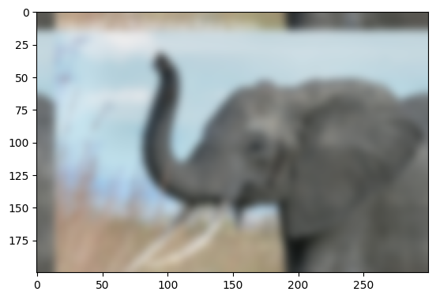
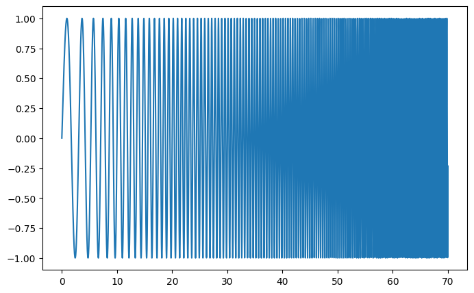
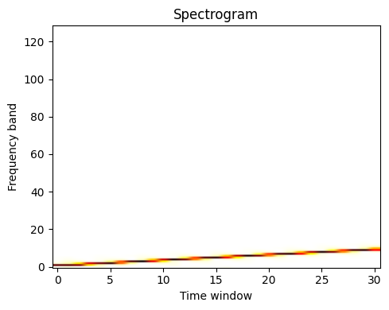
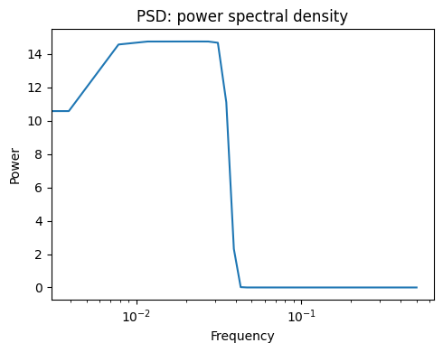

SciPy : high-level scientific computing#
Authors: Gaël Varoquaux, Adrien Chauve, Andre Espaze, Emmanuelle Gouillart, Ralf Gommers
Scipy
The scipy package contains various toolboxes dedicated to common
issues in scientific computing. Its different submodules correspond
to different applications, such as interpolation, integration,
optimization, image processing, statistics, special functions, etc.
Note
scipy can be compared to other standard scientific-computing
libraries, such as the GSL (GNU Scientific Library for C and C++),
or Matlab’s toolboxes. scipy is the core package for scientific
routines in Python; it is meant to operate efficiently on numpy
arrays, so that NumPy and SciPy work hand in hand.
Before implementing a routine, it is worth checking if the desired
data processing is not already implemented in SciPy. As
non-professional programmers, scientists often tend to re-invent the
wheel, which leads to buggy, non-optimal, difficult-to-share and
unmaintainable code. By contrast, SciPy’s routines are optimized
and tested, and should therefore be used when possible.
Warning
This tutorial is far from an introduction to numerical computing.
As enumerating the different submodules and functions in SciPy would
be very boring, we concentrate instead on a few examples to give a
general idea of how to use scipy for scientific computing.
scipy is composed of task-specific sub-modules:
Vector quantization / Kmeans |
|
Physical and mathematical constants |
|
Fourier transform |
|
Integration routines |
|
Interpolation |
|
Data input and output |
|
Linear algebra routines |
|
n-dimensional image package |
|
Orthogonal distance regression |
|
Optimization |
|
Signal processing |
|
Sparse matrices |
|
Spatial data structures and algorithms |
|
Any special mathematical functions |
|
Statistics |
Scipy modules all depend on numpy, but are mostly independent of each
other. The standard way of importing NumPy and these SciPy modules is:
import numpy as np
import scipy as sp
We will also be using plotting for this tutorial.
import matplotlib.pyplot as plt
File input/output: scipy.io#
scipy.io contains functions for loading and saving data in
several common formats including Matlab, IDL, Matrix Market, and
Harwell-Boeing.
Matlab files: Loading and saving:
a = np.ones((3, 3))
sp.io.savemat('file.mat', {'a': a}) # savemat expects a dictionary
data = sp.io.loadmat('file.mat')
data['a']
array([[1., 1., 1.],
[1., 1., 1.],
[1., 1., 1.]])
Warning — Python / Matlab mismatch
The Matlab file format does not support 1D arrays.
a = np.ones(3)
a
array([1., 1., 1.])
a.shape
(3,)
sp.io.savemat('file.mat', {'a': a})
a2 = sp.io.loadmat('file.mat')['a']
a2
array([[1., 1., 1.]])
a2.shape
(1, 3)
Notice that the original array was a one-dimensional array, whereas the saved and reloaded array is a two-dimensional array with a single row.
For other formats, see the scipy.io documentation.
End of warning
See also
Load text files:
numpy.loadtxt()/numpy.savetxt()Clever loading of text/csv files:
numpy.genfromtxt()Fast and efficient, but NumPy-specific, binary format:
numpy.save()/numpy.load()Basic input/output of images in Matplotlib:
matplotlib.pyplot.imread()/matplotlib.pyplot.imsave()More advanced input/output of images:
imageio
Special functions: scipy.special#
“Special” functions are functions commonly used in science and mathematics that are not considered to be “elementary” functions. Examples include
the gamma function,
scipy.special.gamma(),the error function,
scipy.special.erf(),Bessel functions, such as
scipy.special.jv()(Bessel function of the first kind), andelliptic functions, such as
scipy.special.ellipj()(Jacobi elliptic functions).
Other special functions are combinations of familiar elementary functions, but they offer better accuracy or robustness than their naive implementations would.
Most of these function are computed elementwise and follow standard
NumPy broadcasting rules when the input arrays have different shapes.
For example, scipy.special.xlog1py() is mathematically equivalent
to \(x\log(1 + y)\).
x = np.asarray([1, 2])
y = np.asarray([[3], [4], [5]])
res = sp.special.xlog1py(x, y)
res.shape
(3, 2)
ref = x * np.log(1 + y)
np.allclose(res, ref)
True
However, scipy.special.xlog1py() is numerically favorable for small \(y\),
when explicit addition of 1 would lead to loss of precision due to floating
point truncation error.
x = 2.5
y = 1e-18
x * np.log(1 + y)
np.float64(0.0)
sp.special.xlog1py(x, y)
np.float64(2.5e-18)
Many special functions also have “logarithmized” variants. For instance, the gamma function \(\Gamma(\cdot)\) is related to the factorial function by \(n! = \Gamma(n + 1)\), but it extends the domain from the positive integers to the complex plane.
x = np.arange(10)
np.allclose(sp.special.gamma(x + 1), sp.special.factorial(x))
True
sp.special.gamma(5) < sp.special.gamma(5.5) < sp.special.gamma(6)
np.True_
The factorial function grows quickly, and so the gamma function overflows
for moderate values of the argument. However, sometimes only the logarithm
of the gamma function is needed. In such cases, we can compute the logarithm
of the gamma function directly using scipy.special.gammaln().
x = [5, 50, 500]
np.log(sp.special.gamma(x))
array([ 3.17805383, 144.56574395, inf])
sp.special.gammaln(x)
array([ 3.17805383, 144.56574395, 2605.11585036])
Such functions can often be used when the intermediate components of a calculation would overflow or underflow, but the final result would not. For example, suppose we wish to compute the ratio \(\Gamma(500)/\Gamma(499)\).
a = sp.special.gamma(500)
b = sp.special.gamma(499)
a, b
(np.float64(inf), np.float64(inf))
Both the numerator and denominator overflow, so performing \(a / b\) will not return the result we seek. However, the magnitude of the result should be moderate, so the use of logarithms comes to mind. Combining the identities \(\log(a/b) = \log(a) - \log(b)\) and \(\exp(\log(x)) = x\), we get:
log_a = sp.special.gammaln(500)
log_b = sp.special.gammaln(499)
log_res = log_a - log_b
res = np.exp(log_res)
res
np.float64(499.00000000006696)
Similarly, suppose we wish to compute the difference
\(\log(\Gamma(500) - \Gamma(499))\). For this, we use
scipy.special.logsumexp(), which computes
\(\log(\exp(x) + \exp(y))\) using a numerical trick that avoids overflow.
res = sp.special.logsumexp([log_a, log_b],
b=[1, -1]) # weights the terms of the sum
res
np.float64(2605.1138443430073)
For more information about these and many other special functions, see
the documentation of scipy.special.
Linear algebra operations: scipy.linalg#
scipy.linalg provides a Python interface to efficient, compiled
implementations of standard linear algebra operations: the BLAS (Basic
Linear Algebra Subroutines) and LAPACK (Linear Algebra PACKage) libraries.
For example, the scipy.linalg.det() function computes the determinant
of a square matrix:
arr = np.array([[1, 2],
[3, 4]])
sp.linalg.det(arr)
np.float64(-2.0)
Mathematically, the solution of a linear system \(Ax = b\) is \(x = A^{-1}b\),
but explicit inversion of a matrix is numerically unstable and should be avoided.
Instead, use scipy.linalg.solve():
A = np.array([[1, 2],
[2, 3]])
b = np.array([14, 23])
x = sp.linalg.solve(A, b)
x
array([4., 5.])
np.allclose(A @ x, b)
True
Linear systems with special structure can often be solved more efficiently
than more general systems. For example, systems with triangular matrices
can be solved using scipy.linalg.solve_triangular():
A_upper = np.triu(A)
A_upper
array([[1, 2],
[0, 3]])
np.allclose(sp.linalg.solve_triangular(A_upper, b, lower=False),
sp.linalg.solve(A_upper, b))
True
scipy.linalg also features matrix factorizations/decompositions
such as the singular value decomposition.
A = np.array([[1, 2],
[2, 3]])
U, s, Vh = sp.linalg.svd(A)
s # singular values
array([4.23606798, 0.23606798])
The original matrix can be recovered by matrix multiplication of the factors:
S = np.diag(s) # convert to diagonal matrix before matrix multiplication
A2 = U @ S @ Vh
np.allclose(A2, A)
True
A3 = (U * s) @ Vh # more efficient: use array math broadcasting rules!
np.allclose(A3, A)
True
Many other decompositions (e.g. LU, Cholesky, QR), solvers for structured
linear systems (e.g. triangular, circulant), eigenvalue problem algorithms,
matrix functions (e.g. matrix exponential), and routines for special matrix
creation (e.g. block diagonal, toeplitz) are available in scipy.linalg.
Interpolation: scipy.interpolate#
scipy.interpolate is used for fitting a function – an “interpolant” –
to experimental or computed data. Once fit, the interpolant can be used to
approximate the underlying function at intermediate points; it can also be used
to compute the integral, derivative, or inverse of the function.
Some kinds of interpolants, known as “smoothing splines”, are designed to generate smooth curves from noisy data. For example, suppose we have the following data:
rng = np.random.default_rng(27446968)
measured_time = np.linspace(0, 2 * np.pi, 20)
function = np.sin(measured_time)
noise = rng.normal(loc=0, scale=0.1, size=20)
measurements = function + noise
scipy.interpolate.make_smoothing_spline() can be used to form a curve
similar to the underlying sine function.
smoothing_spline = sp.interpolate.make_smoothing_spline(measured_time, measurements)
interpolation_time = np.linspace(0, 2 * np.pi, 200)
smooth_results = smoothing_spline(interpolation_time)
On the other hand, if the data are not noisy, it may be desirable to pass exactly through each point.
interp_spline = sp.interpolate.make_interp_spline(measured_time, function)
interp_results = interp_spline(interpolation_time)
The derivative and antiderivative methods of the result object can be used
for differentiation and integration. For the latter, the constant of integration is
assumed to be zero, but we can “wrap” the antiderivative to include a nonzero
constant of integration.
d_interp_spline = interp_spline.derivative()
d_interp_results = d_interp_spline(interpolation_time)
i_interp_spline = lambda t: interp_spline.antiderivative()(t) - 1
i_interp_results = i_interp_spline(interpolation_time)
For functions that are monotonic on an interval (e.g. \(\sin\) from \(\pi/2\)
to \(3\pi/2\)), we can reverse the arguments of make_interp_spline to
interpolate the inverse function. Because the first argument is expected to be
monotonically increasing, we also reverse the order of elements in the arrays
with numpy.flip().
i = (measured_time > np.pi/2) & (measured_time < 3*np.pi/2)
inverse_spline = sp.interpolate.make_interp_spline(np.flip(function[i]),
np.flip(measured_time[i]))
inverse_spline(0)
array(3.14159265)
See the summary exercise on Maximum wind speed prediction at the Sprogø station for a more
advanced spline interpolation example, and read the SciPy interpolation
tutorial and the
scipy.interpolate documentation for much more information.
Optimization and fit: scipy.optimize#
scipy.optimize provides algorithms for root finding, curve fitting,
and more general optimization.
Root Finding#
scipy.optimize.root_scalar() attempts to find a root of a specified
scalar-valued function (i.e., an argument at which the function value is zero).
Like many scipy.optimize functions, the function needs an initial
guess of the solution, which the algorithm will refine until it converges or
recognizes failure. We also provide the derivative to improve the rate of
convergence.
def f(x):
return (x-1)*(x-2)
def df(x):
return 2*x - 3
x0 = 0 # guess
res = sp.optimize.root_scalar(f, x0=x0, fprime=df)
res
converged: True
flag: converged
function_calls: 12
iterations: 6
root: 1.0
method: newton
Warning
None of the functions in scipy.optimize that accept a guess are
guaranteed to converge for all possible guesses! (For example, try
x0=1.5 in the example above, where the derivative of the function is
exactly zero.) If this occurs, try a different guess, adjust the options
(like providing a bracket as shown below), or consider whether SciPy
offers a more appropriate method for the problem.
Note that only one the root at 1.0 is found. By inspection, we can tell
that there is a second root at 2.0. We can direct the function toward a
particular root by changing the guess or by passing a bracket that contains
only the root we seek.
res = sp.optimize.root_scalar(f, bracket=(1.5, 10))
res.root
2.0
For multivariate problems, use scipy.optimize.root().
def f(x):
# intersection of unit circle and line from origin
return [x[0]**2 + x[1]**2 - 1,
x[1] - x[0]]
res = sp.optimize.root(f, x0=[0, 0])
np.allclose(f(res.x), 0, atol=1e-10)
True
np.allclose(res.x, np.sqrt(2)/2)
True
Over-constrained problems can be solved in the least-squares sense using
scipy.optimize.root() with method='lm' (Levenberg-Marquardt).
def f(x):
# intersection of unit circle, line from origin, and parabola
return [x[0]**2 + x[1]**2 - 1,
x[1] - x[0],
x[1] - x[0]**2]
res = sp.optimize.root(f, x0=[1, 1], method='lm')
res.success
True
res.x
array([0.76096066, 0.66017736])
See the documentation of scipy.optimize.root_scalar() and
scipy.optimize.root() for a variety of other solution algorithms and
options.
Curve fitting#
Suppose we have data that is sinusoidal but noisy:
x_data = np.linspace(-5, 5, num=50) # 50 values between -5 and 5
noise = 0.01 * np.cos(100 * x_data)
a, b = 2.9, 1.5
y_data = a * np.cos(b * x_data) + noise
We can approximate the underlying amplitude, frequency, and phase from the data by least squares curve fitting. To begin, we write a function that accepts the independent variable as the first argument and all parameters to fit as separate arguments:
def f(x, a, b, c):
return a * np.sin(b * x + c)
We then use scipy.optimize.curve_fit() to find \(a\) and \(b\):
params, _ = sp.optimize.curve_fit(f, x_data, y_data, p0=[2, 1, 3])
params
array([2.900026 , 1.50012043, 1.57079633])
ref = [a, b, np.pi/2] # what we'd expect
np.allclose(params, ref, rtol=1e-3)
True
We plot the resulting curve on the data:
Exercise 39
The temperature extremes in Alaska for each month, starting in January, are given by (in degrees Celsius):
max: 17, 19, 21, 28, 33, 38, 37, 37, 31, 23, 19, 18
min: -62, -59, -56, -46, -32, -18, -9, -13, -25, -46, -52, -58
Plot these temperature extremes.
Define a function that can describe min and max temperatures. Hint: this function has to have a period of 1 year. Hint: include a time offset.
Fit this function to the data with
scipy.optimize.curve_fit().Plot the result. Is the fit reasonable? If not, why?
Is the time offset for min and max temperatures the same within the fit accuracy?
Solution to Exercise 39
Curve fitting: temperature as a function of month of the year
We have the min and max temperatures in Alaska for each months of the year. We would like to find a function to describe this yearly evolution.
For this, we will fit a periodic function.
# The data
temp_max = np.array([17, 19, 21, 28, 33, 38, 37, 37, 31, 23, 19, 18])
temp_min = np.array([-62, -59, -56, -46, -32, -18, -9, -13, -25, -46, -52, -58])
months = np.arange(12)
plt.plot(months, temp_max, "ro")
plt.plot(months, temp_min, "bo")
plt.xlabel("Month")
plt.ylabel("Min and max temperature");
Fitting it to a periodic function:
def yearly_temps(times, avg, ampl, time_offset):
return avg + ampl * np.cos((times + time_offset) * 2 * np.pi / times.max())
res_max, cov_max = sp.optimize.curve_fit(yearly_temps, months, temp_max, [20, 10, 0])
res_min, cov_min = sp.optimize.curve_fit(yearly_temps, months, temp_min, [-40, 20, 0])
Plotting the fit
days = np.linspace(0, 12, num=365)
plt.figure()
plt.plot(months, temp_max, "ro")
plt.plot(days, yearly_temps(days, *res_max), "r-")
plt.plot(months, temp_min, "bo")
plt.plot(days, yearly_temps(days, *res_min), "b-")
plt.xlabel("Month")
plt.ylabel(r"Temperature ($^\circ$C)");
Optimization#
Suppose we wish to minimize the scalar-valued function of a single variable \(f(x) = x^2 + 10 \sin(x)\):
def f(x):
return x**2 + 10 * np.sin(x)
x = np.arange(-5, 5, 0.1)
plt.plot(x, f(x))
[<matplotlib.lines.Line2D at 0x11829d9d0>]
We can see that the function has a local minimizer near \(x = 3.8\) and a global minimizer near \(x = -1.3\), but the precise values cannot be determined from the plot.
The most appropriate function for this purpose is
scipy.optimize.minimize_scalar().
Since we know the approximate locations of the minima, we will provide
bounds that restrict the search to the vicinity of the global minimum.
res = sp.optimize.minimize_scalar(f, bounds=(-2, -1))
res
message: Solution found.
success: True
status: 0
fun: -7.9458233756095895
x: -1.3064409970312618
nit: 8
nfev: 8
res.fun == f(res.x)
np.True_
If we did not already know the approximate location of the global minimum,
we could use one of SciPy’s global minimizers, such as
scipy.optimize.differential_evolution(). We are required to pass
bounds, but they do not need to be tight.
bounds=[(-5, 5)] # list of lower, upper bound for each variable
res = sp.optimize.differential_evolution(f, bounds=bounds)
res
message: Optimization terminated successfully.
success: True
fun: -7.945823375615284
x: [-1.306e+00]
nit: 5
nfev: 98
population: [[-1.312e+00]
[-1.181e+00]
...
[-1.317e+00]
[-1.357e+00]]
population_energies: [-7.946e+00 -7.855e+00 ... -7.945e+00 -7.931e+00]
jac: [ 8.882e-08]
For multivariate optimization, a good choice for many problems is
scipy.optimize.minimize().
Suppose we wish to find the minimum of a quadratic function of two
variables, \(f(x_0, x_1) = (x_0-1)^2 + (x_1-2)^2\).
def f(x):
return (x[0] - 1)**2 + (x[1] - 2)**2
Like scipy.optimize.root(), scipy.optimize.minimize()
requires a guess x0. (Note that this is the initial value of
both variables rather than the value of the variable we happened to
label \(x_0\).)
res = sp.optimize.minimize(f, x0=[0, 0])
res
message: Optimization terminated successfully.
success: True
status: 0
fun: 1.705780445775116e-16
x: [ 1.000e+00 2.000e+00]
nit: 2
jac: [ 3.219e-09 -8.462e-09]
hess_inv: [[ 9.000e-01 -2.000e-01]
[-2.000e-01 6.000e-01]]
nfev: 9
njev: 3
This barely scratches the surface of SciPy’s optimization features, which
include mixed integer linear programming, constrained nonlinear programming,
and the solution of assignment problems. For much more information, see the
documentation of scipy.optimize and the advanced chapter
Mathematical optimization: finding minima of functions.
Exercise 40
This is an exercise on 2-D minimization.
The six-hump camelback function
\(f(x, y) = (4 - 2.1x^2 + \frac{x^4}{3})x^2 + xy + (4y^2 - 4)y^2\)
has multiple local minima. Find a global minimum (there is more than one, each with the same value of the objective function) and at least one other local minimum.
Hints:
Variables can be restricted to \(-2 < x < 2\) and \(-1 < y < 1\).
numpy.meshgrid()andmatplotlib.pyplot.imshow()can help with visualization.Try minimizing with
scipy.optimize.minimize()with an initial guess of \((x, y) = (0, 0)\). Does it find the global minimum, or converge to a local minimum? What about other initial guesses?Try minimizing with
scipy.optimize.differential_evolution().
Solution to Exercise 40
Optimization of a two-parameter function:
# Define the function that we are interested in
def sixhump(x):
return (
(4 - 2.1 * x[0] ** 2 + x[0] ** 4 / 3) * x[0] ** 2
+ x[0] * x[1]
+ (-4 + 4 * x[1] ** 2) * x[1] ** 2
)
# Make a grid to evaluate the function (for plotting)
xlim = [-2, 2]
ylim = [-1, 1]
x = np.linspace(*xlim) # type: ignore[call-overload]
y = np.linspace(*ylim) # type: ignore[call-overload]
xg, yg = np.meshgrid(x, y)
A 2D image plot of the function:
# Simple visualization in 2D
plt.figure()
plt.imshow(sixhump([xg, yg]), extent=xlim + ylim, origin="lower") # type: ignore[arg-type]
plt.colorbar();
A 3D surface plot of the function:
from mpl_toolkits.mplot3d import Axes3D
fig = plt.figure()
ax: Axes3D = fig.add_subplot(111, projection="3d")
surf = ax.plot_surface(
xg,
yg,
sixhump([xg, yg]),
rstride=1,
cstride=1,
cmap="viridis",
linewidth=0,
antialiased=False,
)
ax.set_xlabel("x")
ax.set_ylabel("y")
ax.set_zlabel("f(x, y)")
ax.set_title("Six-hump Camelback function");
Find minima:
# local minimization
res_local = sp.optimize.minimize(sixhump, x0=[0, 0])
# global minimization
res_global = sp.optimize.differential_evolution(sixhump, bounds=[xlim, ylim])
See the summary exercise on Non linear least squares curve fitting: application to point extraction in topographical lidar data for another, more advanced example.
Statistics and random numbers: scipy.stats#
scipy.stats contains fundamental tools for statistics in Python.
Statistical Distributions#
Consider a random variable distributed according to the standard normal. We draw a sample consisting of 100000 observations from the random variable. The normalized histogram of the sample is an estimator of the random variable’s probability density function (PDF):
dist = sp.stats.norm(loc=0, scale=1) # standard normal distribution
sample = dist.rvs(size=100000) # "random variate sample"
plt.hist(sample, bins=50, density=True, label='normalized histogram')
x = np.linspace(-5, 5)
plt.plot(x, dist.pdf(x), label='PDF')
plt.legend()
<matplotlib.legend.Legend at 0x1185b86e0>
Suppose we knew that the sample had been drawn from a distribution belonging to
the family of normal distributions, but we did not know the particular
distribution’s location (mean) and scale (standard deviation). We perform
maximum likelihood estimation of the unknown parameters using the distribution
family’s fit method:
loc, scale = sp.stats.norm.fit(sample)
loc
np.float64(-0.004693686401758028)
scale
np.float64(0.9999284992847827)
Since we know the true parameters of the distribution from which the sample was drawn, we are not surprised that these estimates are similar.
Exercise 41
Generate 1000 random variates from a gamma distribution with a shape
parameter of 1. Hint: the shape parameter is passed as the first
argument when freezing the distribution. Plot the histogram of the
sample, and overlay the distribution’s PDF. Estimate the shape parameter
from the sample using the fit method.
Extra: the distributions have many useful methods. Explore them using tab completion. Plot the cumulative density function of the distribution, and compute the variance.
Sample Statistics and Hypothesis Tests#
The sample mean is an estimator of the mean of the distribution from which the sample was drawn:
np.mean(sample)
np.float64(-0.004693686401758028)
NumPy includes some of the most fundamental sample statistics (e.g.
numpy.mean(), numpy.var(), numpy.percentile());
scipy.stats includes many more. For instance, the geometric mean
is a common measure of central tendency for data that tends to be
distributed over many orders of magnitude.
sp.stats.gmean(2**sample)
np.float64(0.996751871125637)
SciPy also includes a variety of hypothesis tests that produce a
sample statistic and a p-value. For instance, suppose we wish to
test the null hypothesis that sample was drawn from a normal
distribution:
res = sp.stats.normaltest(sample)
res.statistic
np.float64(1.7003759216008296)
res.pvalue
np.float64(0.42733460224566233)
Here, statistic is a sample statistic that tends to be high for
samples that are drawn from non-normal distributions. pvalue is
the probability of observing such a high value of the statistic for
a sample that has been drawn from a normal distribution. If the
p-value is unusually small, this may be taken as evidence that
sample was not drawn from the normal distribution. Our statistic
and p-value are moderate, so the test is inconclusive.
There are many other features of scipy.stats, including circular
statistics, quasi-Monte Carlo methods, and resampling methods.
For much more information, see the documentation of scipy.stats
and the advanced chapter statistics.
Numerical integration: scipy.integrate#
Quadrature#
Suppose we wish to compute the definite integral
\(\int_0^{\pi / 2} \sin(t) dt\) numerically. scipy.integrate.quad()
chooses one of several adaptive techniques depending on the parameters, and
is therefore the recommended first choice for integration of function of a single variable:
integral, error_estimate = sp.integrate.quad(np.sin, 0, np.pi / 2)
np.allclose(integral, 1) # numerical result ~ analytical result
True
abs(integral - 1) < error_estimate # actual error < estimated error
True
Other functions for numerical quadrature, including integration of
multivariate functions and approximating integrals from samples, are available
in scipy.integrate.
Initial Value Problems#
scipy.integrate also features routines for integrating Ordinary
Differential Equations
(ODE). For
example, scipy.integrate.solve_ivp() integrates ODEs of the form:
from an initial time \(t_0\) and initial state \(y(t=t_0)=t_0\) to a final time \(t_f\) or until an event occurs (e.g. a specified state is reached).
As an introduction, consider the initial value problem given by \(\frac{dy}{dt} = -2 y\) and the initial condition \(y(t=0) = 1\) on the interval \(t = 0 \dots 4\). We begin by defining a callable that computes \(f(t, y(t))\) given the current time and state.
def f(t, y):
return -2 * y
Then, to compute y as a function of time:
t_span = (0, 4) # time interval
t_eval = np.linspace(*t_span) # times at which to evaluate `y`
y0 = [1,] # initial state
res = sp.integrate.solve_ivp(f, t_span=t_span, y0=y0, t_eval=t_eval)
and plot the result:
plt.figure(figsize=(4, 3))
plt.plot(res.t, res.y[0])
plt.xlabel('t')
plt.ylabel('y')
plt.title('Solution of Initial Value Problem')
plt.tight_layout();
Let us integrate a more complex ODE: a damped spring-mass oscillator. The position of a mass attached to a spring obeys the 2nd order ODE \(\ddot{y} + 2 \zeta \omega_0 \dot{y} + \omega_0^2 y = 0\) with natural frequency \(\omega_0 = \sqrt{k/m}\), damping ratio \(\zeta = c/(2 m \omega_0)\), spring constant \(k\), mass \(m\), and damping coefficient \(c\).
Before using scipy.integrate.solve_ivp(), the 2nd order ODE needs to be
transformed into a system of first-order ODEs. Note that
If we define \(z = [z_0, z_1]\) where \(z_0 = y\) and \(z_1 = \dot{y}\), then the first order equation:
is equivalent to the original second order equation.
We set:
m = 0.5 # kg
k = 4 # N/m
c = 0.4 # N s/m
zeta = c / (2 * m * np.sqrt(k/m))
omega = np.sqrt(k / m)
and define the function that computes \(\dot{z} = f(t, z(t))\):
def f(t, z, zeta, omega):
return (z[1], -2.0 * zeta * omega * z[1] - omega**2 * z[0])
Integration of the system follows:
t_span = (0, 10)
t_eval = np.linspace(*t_span, 100)
z0 = [1, 0]
res = sp.integrate.solve_ivp(f, t_span, z0, t_eval=t_eval,
args=(zeta, omega), method='LSODA')
Note
With the option method='LSODA', scipy.integrate.solve_ivp() uses the LSODA
(Livermore Solver for Ordinary Differential equations with Automatic method switching
for stiff and non-stiff problems). See the [ODEPACK Fortran library] for more details.
See also
Partial Differental Equations
There is no Partial Differential Equations (PDE) solver in SciPy. Some Python packages for solving PDE’s are available, such as [fipy] or [SfePy].
Fast Fourier transforms: scipy.fft#
The scipy.fft module computes fast Fourier transforms (FFTs)
and offers utilities to handle them. Some important functions are:
scipy.fft.fft()to compute the FFTscipy.fft.fftfreq()to generate the sampling frequenciesscipy.fft.ifft()to compute the inverse FFT, from frequency space to signal space
As an illustration, a example (noisy) input signal (sig), and its FFT:
# Time.
dt = 0.02 # Time step.
t = np.arange(0, 20, dt) # Time vector.
# An example noisy signal over time.
sig = np.sin(2 * np.pi / 5.0 * t) + 0.5 * rng.normal(size=t.size)
# FFT of signal.
sig_fft = sp.fft.fft(sig)
# Corresponding frequencies.
freqs = sp.fft.fftfreq(sig.size, d=dt)
Signal |
FFT |
|  | 
|
The peak signal frequency can be found with freqs[power.argmax()].
The code of this example and the figures above can be found in the Scipy FFT example.
Setting the Fourier component above this frequency to zero and inverting the
FFT with scipy.fft.ifft(), gives a filtered signal (see the
example for detail).
numpy.fft
NumPy also has an implementation of FFT (numpy.fft). However, the SciPy
one should be preferred, as it uses more efficient underlying implementations.
Fully worked examples:
|  |  |
Exercise 42

Examine the provided image
moonlanding.png, which is heavily contaminated with periodic noise. In this exercise, we aim to clean up the noise using the Fast Fourier Transform.Load the image using
matplotlib.pyplot.imread().Find and use the 2-D FFT function in
scipy.fft, and plot the spectrum (Fourier transform of) the image. Do you have any trouble visualising the spectrum? If so, why?The spectrum consists of high and low frequency components. The noise is contained in the high-frequency part of the spectrum, so set some of those components to zero (use array slicing).
Apply the inverse Fourier transform to see the resulting image.
{kind=link}
Solution to Exercise 42
Implementing image denoising with FFT.
Denoise an image (data/moonlanding.png) by implementing a blur
with an FFT.
Implements, via FFT, the following convolution:
# Read and plot the image
im = plt.imread("data/moonlanding.png").astype(float)
plt.figure()
plt.imshow(im, "gray")
plt.title("Original image");
# Compute the 2d FFT of the input image
im_fft = sp.fft.fft2(im)
# Show the results
from matplotlib.colors import LogNorm
def plot_spectrum(im_fft):
# A logarithmic colormap
plt.imshow(np.abs(im_fft), norm=LogNorm(vmin=5))
plt.colorbar()
plt.figure()
plot_spectrum(im_fft)
plt.title("Fourier transform");
Filter in FFT:
In the lines following, we’ll make a copy of the original spectrum and truncate coefficients.
# Define the fraction of coefficients (in each direction) we keep
keep_fraction = 0.1
# Call ff a copy of the original transform. NumPy arrays have a copy
# method for this purpose.
im_fft2 = im_fft.copy()
# Set r and c to be the number of rows and columns of the array.
r, c = im_fft2.shape
# Set to zero all rows with indices between r*keep_fraction and
# r*(1-keep_fraction):
im_fft2[int(r * keep_fraction) : int(r * (1 - keep_fraction))] = 0
# Similarly with the columns:
im_fft2[:, int(c * keep_fraction) : int(c * (1 - keep_fraction))] = 0
plt.figure()
plot_spectrum(im_fft2)
plt.title("Filtered Spectrum");
Reconstruct the final image
# Reconstruct the denoised image from the filtered spectrum, keep only the
# real part for display.
im_new = sp.fft.ifft2(im_fft2).real
plt.figure()
plt.imshow(im_new, "gray")
plt.title("Reconstructed Image");
Easier and better: scipy.ndimage.gaussian_filter()
Implementing filtering directly with FFTs is tricky and time consuming.
We can use the Gaussian filter from scipy.ndimage
im_blur = sp.ndimage.gaussian_filter(im, 4)
plt.figure()
plt.imshow(im_blur, "gray")
plt.title("Blurred image");
Signal processing: scipy.signal#
Note
scipy.signal is for typical signal processing: 1D,
regularly-sampled signals.
Resampling scipy.signal.resample(): resample a signal to n
points using FFT.
t = np.linspace(0, 5, 100)
x = np.sin(t)
x_resampled = sp.signal.resample(x, 25)
Note
Notice how on the side of the window the resampling is less accurate and has a rippling effect.
This resampling is different from the interpolation provided by scipy.interpolate as it
only applies to regularly sampled data.
Detrending scipy.signal.detrend(): remove linear trend from signal:
t = np.linspace(0, 5, 100)
rng = np.random.default_rng()
x = t + rng.normal(size=100)
x_detrended = sp.signal.detrend(x)
Filtering:
For non-linear filtering, scipy.signal has filtering (median
filter scipy.signal.medfilt(), Wiener scipy.signal.wiener()),
but we will discuss this in the image section.
Note
scipy.signal also has a full-blown set of tools for the design
of linear filter (finite and infinite response filters), but this is
out of the scope of this tutorial.
Spectral analysis:
scipy.signal.spectrogram() computes a spectrogram — frequency spectra
over consecutive time windows — while scipy.signal.welch() computes
a power spectrum density (PSD).
Signal |
Spectrogram |
Power Spectral Density |
|---|---|---|
|  |  |  |
See the Spectrogram example.
Image manipulation: scipy.ndimage#
Summary exercises on scientific computing#
The summary exercises use mainly NumPy, SciPy and Matplotlib. They provide some real-life examples of scientific computing with Python. Now that the basics of working with NumPy and SciPy have been introduced, the interested user is invited to try these exercises.
See also
References to go further
Some chapters of the advanced and the packages and applications parts of the SciPy lectures.
The SciPy cookbook